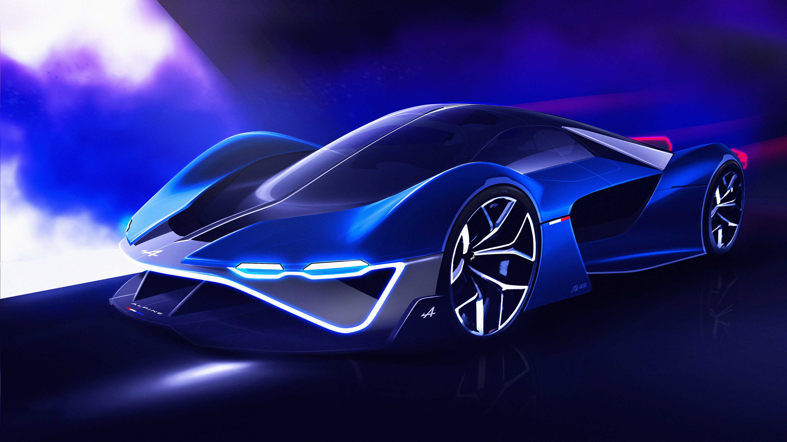

Rychlá auta



Něco málo o rychlých autech
Rychlá auta jsou synonymem pro vášeň, výkon a adrenalin. Jejich aerodynamický design, výkonné motory a precizní technologie umožňují dosahovat ohromujících rychlostí a extrémních zrychlení. Tyto stroje jsou stavěny pro okamžité reakce a neuvěřitelnou dynamiku, což je dělá oblíbenými mezi automobilovými nadšenci a závodníky.